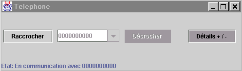

TD2 - Gestion des évènements et placement
Ce TD est la suite du TD1. Vous repartirez donc des fichiers sources que vous
avez déjà.
- Edition des éléments de la combo et gestion des événements
associés
Modifier le programme pour que
- le composant « combobox » devienne éditable.
- lorsque l'utilisateur presse « entrée » à
la fin du numéro :
- le numéro vient s'ajouter dans la liste des éléments
de la combobox (historique des numéros appelés)
- la communication s'établit (pour simuler cette communication
on se contentera de faire passer l'application en mode communication)
- la barre d'état doit refléter les changements d'états
- Gérer les évènements associés aux boutons raccrocher
et décrocher :
a. Un clic sur raccrocher doit faire passer l'application en mode hors-communication
si elle était en mode communication. Le bouton décrocher doit
devenir actif (le bouton raccrocher inactif).
b. Un clic sur décrocher doit faire passer l'application en mode communication
et ajoute le numéro dans l'historique des numéros appelés.
c. Modifier le comportement de la combo pour que lorsque l'utilisateur presse
« entrée », le bouton décrocher devienne inactif
et le bouton raccrocher devienne actif (NB : assurer la cohérence entre
2.b, 3.b et 3.c pour que le code correspondant à décrocher ne
soit implémenté qu4une seule fois).
d. Ajouter une barre d'état qui affiche l'état de l'application
et se met à jour à chaque changement d'état.
- Visibilité des composants :
a. Utiliser le bouton « plus de détails » / « moins
de détails » pour rendre visible / invisible le composant à
trois onglets (Répertoire, MEVO, Config). Ce bouton doit donc permettre
d'obtenir la fenêtre réduite ci-dessous.

- Gestion du double clic :
a. Faire en sorte qu'un double clic sur un élément de la liste
du répertoire permette directement d'appeler la personne correspondante
b. Questions subsidiaires
- ajout d'un numéro (menu contextuel et boite de dialogue d'entrée)
- suppression d'un numéro (menu contextuel et boite de dialogue de
confirmation)
- modification d'un numéro (menu contextuel et boite de dialogue d'entrée)
- appel d'un numéro (double clic et/ou bouton)